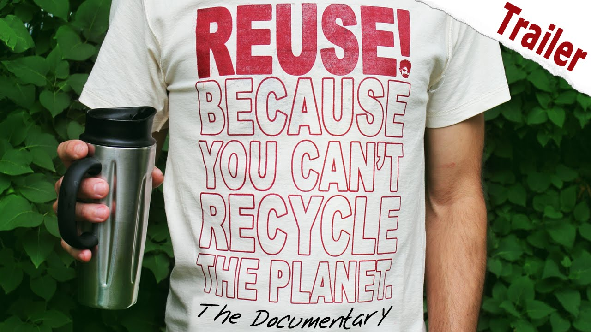

WEALTH FROM WASTE

REUSE
Reusing - Think of ways you could reuse something, like shredding paper for your hamster rather than buying bedding or saving glass jars for storage. If you can not reuse something try the below process
It makes economic and environmental sense to reuse products. Sometimes it takes creativity:
Reuse products for the same purpose. Save paper and plastic bags, and repair broken appliances, furniture and toys.
Reuse products in different ways. Use a coffee can to pack a lunch; use plastic microwave dinner trays as picnic dishes.
Sell old clothes, appliances, toys, and furniture in garage sales or ads, or donate them to charities.
Use reseal able containers rather than plastic wrap.
Use a ceramic coffee mug instead of paper cups.
Reuse grocery bags or bring your own cloth bags to the store. Do not take a bag from the store unless you need one.